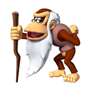

Letter to Myself
How's life ten years in the future? I would hope that you made it as a video game developer since that is what I have been dreaming of since I was a kid. Are you still continuing your martial arts studies? I hope that you are learning some other forms of karate other than just hapkido. I do hope you read this letter. I'm going to try not to forget about it until ten years has passed. Are there any new TV shows and movies that you like? As of now I've been really into the show Once Upon a Time. How are the new Star Wars movies? I think Disney will do a fine job and I'm very exited for Episode VII. Anyways, hopefully you read this letter in the future. See ya in ten years!
Definition of Freedom and Happiness
Happiness - Having freedom and thinking of the positives of life.
